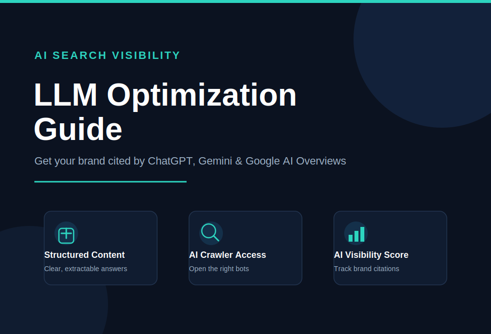

LLM Optimization Guide: How to Get Your Brand Cited by AI Search Engines in 2026

Search behavior has quietly changed. A growing share of your customers no longer scroll through ten blue links, they ask ChatGPT, Gemini, Perplexity, or Google's AI Overviews a question and act on whatever answer appears first. If your brand isn't part of that answer, you're invisible to that customer no matter how well you rank on page one of classic search. That's exactly why a solid LLM optimization guide has become essential reading for marketers, founders, and SEO teams in 2026. This guide walks you through what LLM optimization actually means, a complete step-by-step process to implement it, the mistakes that quietly sabotage most attempts, and where the discipline is heading next.
Whether you're new to the concept or already experimenting with AI visibility, this LLM optimization guide is built to give you a practical, no-fluff roadmap you can start applying today.
What Is LLM Optimization, Really?
LLM optimization is the practice of structuring your content, brand entity, and technical infrastructure so large language models can find, understand, and cite your brand when generating answers. It sits alongside related terms like generative engine optimization (GEO) and answer engine optimization (AEO), and in practice, most teams use these terms interchangeably.
Here's the mechanical difference from classic SEO: a traditional search engine returns a ranked list of pages and lets the user pick one. A generative engine reads across dozens of sources, synthesizes them into a single answer, and decides on its own which sources deserve a citation, a mention, or a link. Your job shifts from "rank higher" to "become the source worth quoting."
Step-by-Step LLM Optimization Guide
Step 1: Confirm AI Crawlers Can Actually Access Your Site
Before any content work, verify that AI crawlers can reach your pages. This is the single most common failure point. Many sites accidentally block AI bots through default CDN or firewall settings, particularly platforms that ship with restrictive defaults out of the box. Check your robots.txt file and server logs for OAI-SearchBot and ChatGPT-User (OpenAI), PerplexityBot (Perplexity), Google-Extended (Gemini and AI Overviews), ClaudeBot (Anthropic), and Applebot-Extended (Apple). If any of these are disallowed, your content is functionally invisible to that engine no matter how good it is.
Step 2: Audit Your Content for Extractability
AI systems pull passages, not pages. A model scanning your article favors clean, self-contained statements over long narrative buildup. Rewrite key sections so the first sentence of a page or section states the core fact plainly, in a "what it is, what it does, why it matters" structure. Keep the opening paragraph under roughly 80 words so the full definition fits comfortably within the portion of the page an AI model weighs most heavily during summarization.
Step 3: Build Topical Depth, Not Just Keyword Coverage
Generative engines reward comprehensiveness. A shorter article that hits a keyword density target will typically lose out to a resource that thoroughly covers adjacent subtopics, related questions, and practical nuance. Structure your content in clusters: one central hub page supported by detailed guides on specific subtopics, all interlinked. This signals depth of expertise in a way a single, isolated article cannot.
Step 4: Add Structured Data and Clear Entity Signals
Schema markup, particularly Article, FAQPage, and Organization schema, gives AI systems explicit, machine-readable facts instead of forcing them to infer meaning from prose. Equally important is entity consistency: use the same terminology for your brand, products, and services everywhere. If you alternate between different phrases for the same concept, models may fail to connect them as the same entity, diluting your authority signal.
Step 5: Earn Third-Party Mentions and Citations
Generative engines lean heavily on cross-referenced information. A claim repeated across multiple independent, credible sources carries more weight than the same claim appearing only on your own site. Pursue digital PR, guest contributions, and mentions on industry publications, forums, and comparison sites. This is the modern equivalent of backlink building, except the goal is corroboration, not just link equity.
Step 6: Publish Original Data and Clear Answers to Real Questions
AI models are trained to favor specific, verifiable information over vague marketing language. Original research, case studies, benchmarks, and concrete numbers give a model something distinct to cite. Structure content around the exact questions your audience asks, using question-style subheadings that mirror natural language queries.
Step 7: Monitor Your AI Visibility and Iterate
You can't optimize what you don't measure. Track how often your brand appears across a defined set of intent-based prompts on ChatGPT, Gemini, Perplexity, and AI Overviews. This is increasingly referred to as an "AI visibility score" or "share of model" metric. Treat it the way you'd treat rank tracking: review monthly, identify gaps, and refresh underperforming content.
Benefits and Practical Use Cases of LLM Optimization
- Earlier funnel visibility: Being cited in an AI answer puts your brand in front of buyers during the research phase, often before they visit a single website.
- Increased trust and authority: A citation inside an AI-generated answer functions like a built-in endorsement, since the model effectively vouches for your source.
- Future-proofed traffic strategy: As zero-click search grows, brands that ignore AI visibility risk a slow, compounding decline in discoverability.
- Better content quality overall: The practices that improve LLM visibility, like clarity, structure, and depth, also improve human readability and traditional SEO rankings.
- Competitive differentiation: Most competitors haven't formalized an LLM optimization strategy yet, which creates a meaningful visibility gap for early movers.
Practical use cases span industries: an ecommerce brand ensuring its product specs are cited when a shopper asks an AI for recommendations, a B2B software company aiming to be the example cited when someone asks "what's the best tool for X," or a local business wanting to appear when users ask an AI assistant for recommendations in their area.
Common Mistakes in LLM Optimization (And How to Avoid Them)
Mistake 1: Treating It Like Keyword Stuffing 2.0
Repeating a phrase unnaturally doesn't help an AI model any more than it helped a search engine. Focus on clarity and completeness instead of density.
Mistake 2: Ignoring Technical Access
Teams pour effort into content while their robots.txt file silently blocks the very crawlers they're trying to impress. Always verify access first.
Mistake 3: Writing Vague, Promotional Copy
AI models are trained to prefer specific, checkable information. Generic claims like "industry-leading solution" get skipped in favor of sources with concrete details.
Mistake 4: Inconsistent Entity Naming
Switching between different names or phrases for the same product or service confuses entity recognition and dilutes the authority you've built.
Mistake 5: Expecting Overnight Results
LLM optimization compounds over weeks and months as models retrain and re-crawl the web. Treat it as an ongoing strategy, not a one-time fix.
Mistake 6: Abandoning Traditional SEO
LLM optimization builds on top of solid technical SEO and site authority. Neglecting fundamentals like page speed, mobile usability, and backlinks undermines the whole effort.
Latest Trends and Best Practices for 2026
The discipline is maturing fast. A few shifts worth watching:
- Query fan-out is now standard. Generative engines increasingly break a single question into several sub-queries and search each separately, meaning your content needs to answer adjacent questions, not just the primary one.
- "Share of model" is replacing "share of voice." Brands are shifting from tracking keyword rankings to tracking how often they're cited across a basket of relevant AI prompts.
- Agentic search is emerging. Tools are moving beyond answering questions to taking actions on a user's behalf, which raises the stakes for having clean, machine-readable product and service data.
- Default crawler blocking is a growing risk. Some infrastructure providers have shifted to blocking AI bots by default, so proactive verification of crawler access is now a recurring maintenance task, not a one-time setup.
- Content freshness carries more weight. As models incorporate newer information through retrieval and periodic retraining, regularly updated resources outperform static, outdated ones.
How Our SEO Agency Solves This for You
Building genuine LLM visibility requires the right mix of technical auditing, content strategy, and ongoing measurement, which is exactly where our team specializes. We help brands move from being invisible in AI answers to becoming the source models actually cite.
Our Transparent Process
We start with a full technical and content audit, map your current AI visibility across ChatGPT, Gemini, and Perplexity, then build a prioritized roadmap covering crawler access, structured data, content clusters, and authority building. You get clear reporting at every stage, with no vague monthly summaries.
Free SEO Audit
We offer a free SEO audit that reviews your site's crawlability, content structure, schema implementation, and current AI citation footprint, so you know exactly where the gaps are before committing to anything.
Long-Term Strategy, Not a Quick Fix
LLM optimization rewards consistency. Our long-term strategy combines content clustering, digital PR for third-party mentions, structured data implementation, and monthly AI visibility tracking, so your presence compounds instead of plateauing.
Why Clients Choose Us
We combine deep traditional SEO experience with hands-on generative engine optimization work, meaning you get a team that understands both the fundamentals and the newest tactics, rather than an agency bolting "AI" onto an old playbook.
Ready to see where your brand stands in AI search? Claim your free SEO audit today and get a clear, prioritized plan for improving your LLM visibility.
Conclusion: Your Next Steps
AI-generated answers are becoming a primary discovery channel, and this LLM optimization guide gives you the full playbook to compete for visibility inside them. Start with the fundamentals: confirm crawler access, restructure your content for extractability, build genuine topical depth, add structured data, and earn third-party corroboration. Avoid the common traps of keyword stuffing, vague copy, and inconsistent entity naming. Then measure your AI citation performance the same way you'd track rankings, and keep refining.
The brands that treat LLM optimization as a real, ongoing discipline today will hold a meaningful visibility advantage over the next several years. Start with one page, apply the steps above, and build from there.
Frequently Asked Questions
What is LLM optimization?
LLM optimization is the practice of structuring your website content, brand entity signals, and technical infrastructure so large language models like ChatGPT, Gemini, and Perplexity can find, understand, and cite your brand inside AI-generated answers.
Is LLM optimization the same as SEO?
No. Traditional SEO focuses on ranking a page in a list of blue links, while LLM optimization focuses on becoming the source an AI model chooses to cite, quote, or recommend inside a synthesized answer. They share a foundation, such as crawlability and authority, but the tactics differ.
How long does LLM optimization take to show results?
Most brands begin seeing initial AI citations within four to eight weeks of technical fixes and content restructuring, with meaningful visibility gains building over three to six months of consistent optimization.
Which AI crawlers should I allow on my website?
At minimum, allow OAI-SearchBot and ChatGPT-User from OpenAI, PerplexityBot from Perplexity, Google-Extended for Gemini and AI Overviews, and ClaudeBot from Anthropic. Many sites unintentionally block these through default CDN or firewall settings.
Do I still need traditional SEO if I do LLM optimization?
Yes. Traditional search still drives significant traffic, and strong technical SEO, site authority, and structured data are the foundation that LLM optimization builds on. The two disciplines work together rather than replacing one another.